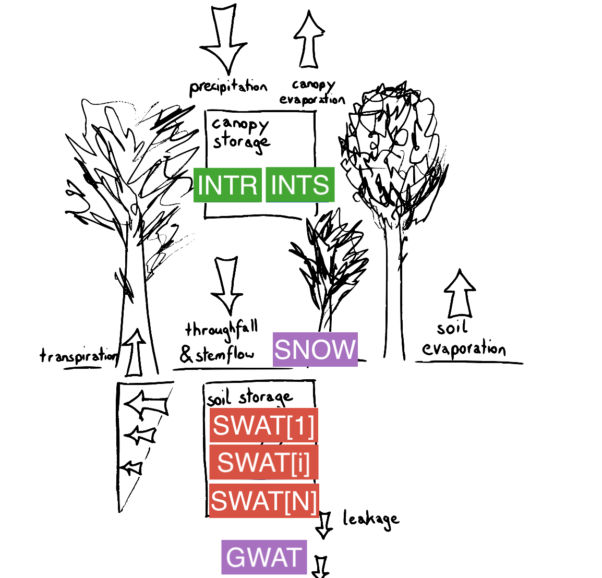

SVAT Model
Description
LWFBrook90.jl is a 1D Soil-Vegetation-Atmosphere Transfer (SVAT) model, calculating the soil water balance in forest soil. Modelled processes include vertical soil water movement, soil and plant evapotranspiration and temporary storages in snowpack or interception layer.
Vertical soil water movement is modelled using the Richards equations and preferential flow. Mass loss through evaporation from temporary storages (snowpack or interception by vegetation) is included.
Processes and state variables in LWF-BROOK90 are summarised visually in Figure 1 below.

Figure 1: Summary of processes and state variables used in LWFBrook90.jl
Implementation
The model is implemented based code from the R package LWFBrook90R and its Fortran source code as well as the original implementation of BROOK90 (v4.8) (www.ecoshift.net/brook/b90doc.html).
LWFBrook90.jl is 100% implemented in Julia. It defines the dynamical system in terms of ordinary differential equations and corresponding (time-varying) parameters and makes use of the package DifferentialEquations.jl for solving the evolution of the system state for a specified time tspan and intial conditions u0.
LWFBrook90.jl is developed with the following objectives in mind:
- [ ] support for stable isotopes (δ¹⁸O and δ²H) by including transport equation and fractionation processes
- [ ] efficient parameter estimation (optimizing computational costs)
- [ ] model flexibility for alternative processes parametrizations (possibly resulting in a flexible model framework)
Currently two mode of operation are distinguished by the flag compute_intermediate_quantities = true. It determines wheter additional, non-essential quantities are computed during simulation. The intent is to optimize computational cost.
LWFBrook90.jl contains two parametrizations of the soil hydraulics: Mualem-van Genuchten and Clapp-Hornberger. They can be switched by setting the parameter FLAG_MualVanGen.
Implementation details
LWFBrook90.jl makes use of DifferentialEquations.jl to solve the system of Ordinary Differential Equations (ODE). Each state variable (u) has a corresponding ODE. The ODEs are defined by their right hand side defined in the function f (which sets du that is the rate of change in u). The right hand side f(u,p,t) depends on time t, parameters p (time-dependent or constant), and the state u.
Variable naming generally follows the convention by BROOK90 and LWFBrook90R, but uses additionally a prefix to indicate their dependencies (p_*, p_fT_*, p_fu_* for constant, time dependent or state dependent parameters, u_*, u_aux_* for elementary and auxiliary state variables respectively, and aux_du_* for auxiliary rate of changes of state variables).
Note that some state variables (rain and snow interception storage, u_INTR, u_INTS and snow storage and energy u_SNOW, u_CC, u_SNOWLQ) are updated once per simulation day and other state variables (groundwater and soil water storages u_GWAT,u_SWATI) are solved on a higher resolved time discretization set by the ODE solver, resulting effecively in an operator splitting scheme.
Implementation roadmap
Some ideas for future development include:
- include models of transport and fractionation processes
- include transport processes within tree stems
- test use of parameter estimation procedures (check external Julia packages)
- refactor code supporting model flexibility
- distinguish Mualem-van Genuchten and Clapp-Hornberger parametrizations more cleanly and reduce redundundancy in code
- split LWFBrook90 code into sub-models:
- one sub-model that precisely reproduces what LWFBrook90R did (w.r.t to adaptive time stepping, operator splitting in state variable updates and manual resetting of variables)
- another sub-model that implements improved implementations of adaptive time stepping (using DiffEq.jl solution domain validity callbacks) and continuous, subdaily variable updates for all state variables